Мы работаем с теми, кому трудно быть в контакте
с собственными чувствами. Не потому что чувств
нет — а потому что выражать их стало непривычно,
неуместно или небезопасно. Мы называем таких людей
рыцарями. Это не аллюзия на героизм, а некий образ,
через который легче говорить о внутренней закрытости.
Мы не предлагаем терапию. Наша работа — создавать
условия, в которых может появиться то, чего раньше
не было. Мы проектируем опыт, в котором можно просто
быть— без давления, без необходимости открываться,
без ожиданий.
Компания Armor Amour не обещает трансформаций.
Мы делаем аккуратные жесты навстречу вам.
Иногда это визуальный след, иногда — ситуация.
Все, что мы создаем, направлено на то, чтобы
у вас появилось немного больше места внутри себя.
Если броня и остаётся — пусть будет чуть тоньше.
1
2
3
4
ПРОСТРАНСТВО: РЕФЛЕКТОРИЙ
ПЕЧАТНЫЕ МАТЕРИАЛЫ О ПРОСТРАНСТВЕ
ГАЛЕРЕЯ ЭМОЦИОНАЛЬНЫХ АРТЕФАКТОВ
МЕРОПРИЯТИЯ: ЛЕКЦИИ, ВЫСТАВКИ, ВСТРЕЧИ